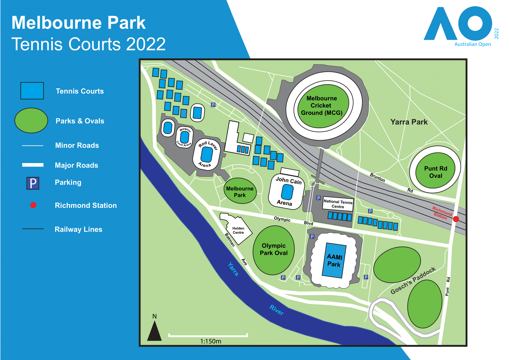
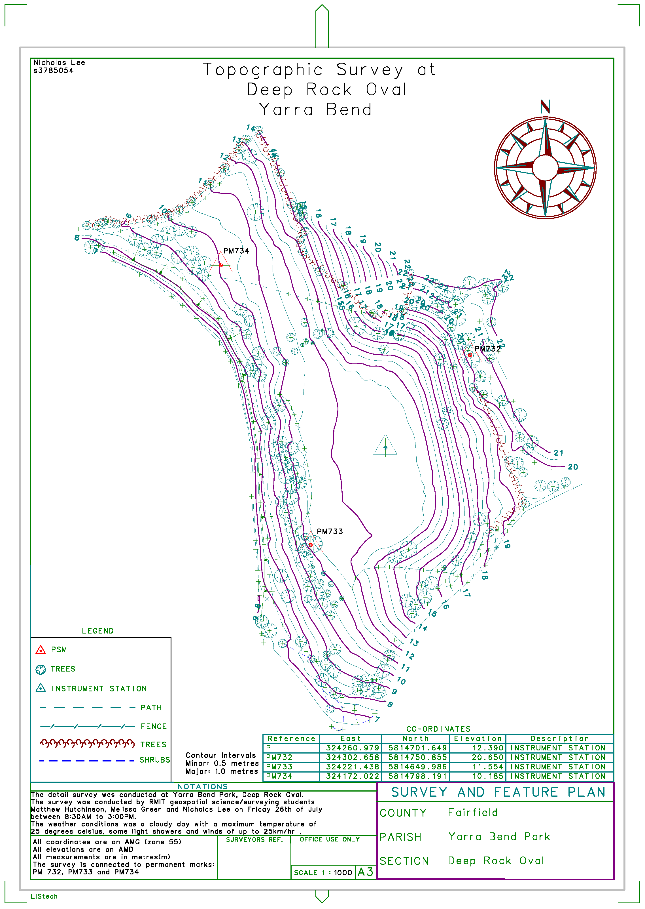
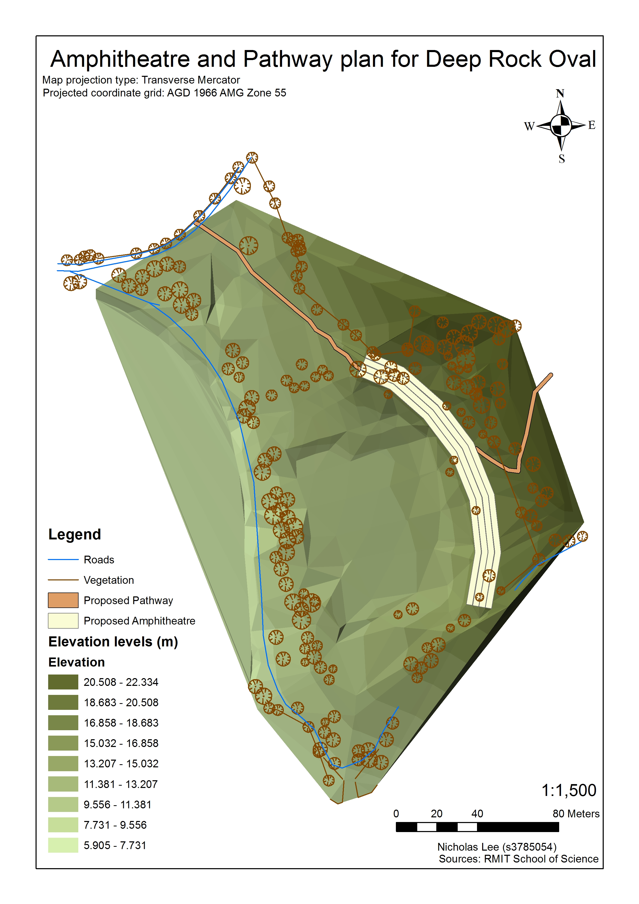
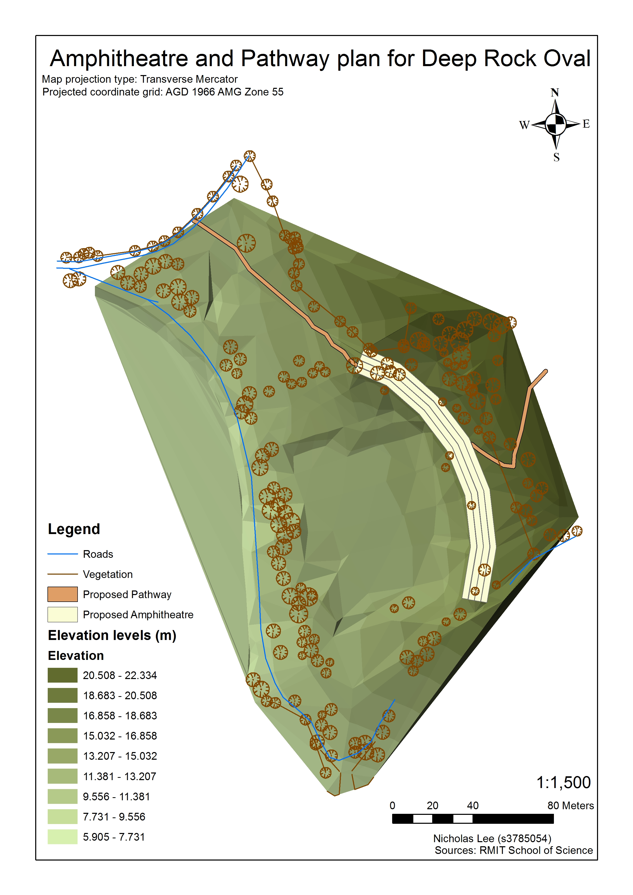

Geoportfolio
Kyle Maljevac
About
This website is the geoportfolio of Kyle Maljevac. The website entails
information that is academically and profesionally related to the field of surveying and geospatial science
A brief introduction about myself is that I am born and raised in Melbourne, Australia and as of September 2024, I am in my fourth and final year of the
Bachelor of Science (Geospatial Science) (Honours) course. My surveying-related interests is working with traverse, collection and analysis of
surveying data, practical software such as LISCAD and AutoCAD.
My own personal hobbies include editing, writing, academic research in humanities and travelling!

Academic Portfolio Overview
Cartography
Cartography consists of creating maps using spatial data obtained from sources such as publicly online government data and population numbers from the Australian
Bureau of Statistics (ABS). While there were two tests and a first practical (not included as it was more of a report rather than a map), the significant
practicals completed in Cartography 2 involved the production of three maps of the student's choice based on a specific topic:
- Practical 2: Map directed at a target audience of choice using provided data of Melbourne City
- Practical 3: Thematic mapping of a demographic's population using data from the Australian Bureau of Statistics (ABS)
- Final Cartography Map: Free-choice on topic
Below are the maps that I have created as part of my course:
Note: If map display is too small, right-click the image and 'Open in new tab' to allow zooming of the map.
Map of the Australian Open - Tour Map

Applied Geospatial Techniques (AGT)
Applied Geospatial Techniques (AGT) is a unique but very practical and interesting subject done in both geospatial science and surveying. The subject uses
knowledge from three different disciplines:
- Surveying
- Geographical Information Systems (GIS)
- Cartography
For the 2021 version of the course which I completed, the assignment was about the proposal of creating an amphitheatre at Deep Rock Oval located at Yarra Bend Park.
The main deliverables of the subject consisted of producing:
- Topographic survey map of Deep Rock Oval
- 3D generated scene of the proposed amphitheatre
- Amphitheatre and Pathway plan of the proposed site
- Final map of the amphitheatre proposal
Parks Victoria has planned development at Deep Rock Oval at Yarra Park which will propose an amphitheatre constructed around this area.
This proposal will also include introducing several native plant species to the location such as River Red
Gum for the sites Canopy, Tree Violet as a shrub for the area and Common Tussockgrass as the ground story layer for the
area. These layers of vegetation will help preserve these iconic plants which are endemic to Australia and provide a beautiful aesthetic
and decorative ora for the surrounding area. The development of the proposal will also include the introduction of new roads, footpaths,
parking and toilet blocks for public use. These plans will help revitalise the site as a community park while improving the current
environment, habitat and vegetation growth for the area that is iconic to Australia
Note: If map display is too small, right-click the image and 'Open in new tab' to allow zooming of the map.
Topographic survey map (Surveying component)

3D Amphitheatre and pathway plan (GIS component)
 

Final map of proposal(Cartography component)

Industry Experience
This page will briefly cover all my work experience (as of September 2024) within the infastructure surveying industry. The two main companies that I have worked at
were Fulton Hogan and TAYLORS. This page will outline my experience gained and skills I have learned from working at Fulton Hogan and TAYLORS along with an
overview of my current surveying capabilities and skillset.
Fulton Hogan
Surveying Assistant
AUGUST 1, 2022-DECEMBER 8, 2022
My time at Fulton Hogan was a 4 month period of working as an assistant for various senior surveyors. The work experience subject taught me a lot about what industry
standard work is done within the surveying industry. I chose to work at Fulton Hogan as I read about it online on how it is a large company that does a lot of
surveying activity and to my personal knowledge, is one of the few companies that specialise in different forms of infastructure surveying work as their primary
source of business. The work at Fulton Hogan in
the Melbourne office was less about performing geospatial analysis on pre-existing data, but rather capturing and collecting their own spatial data which
the mapping team process and edit into a usable form for the client.
As part of the surveying team, the work I was exposed to was Experience in office work and with field practical surveying, including setting up practical equipment
and gathering data from Total Stations, GPS and Levelling equipment. This experience has helped shape my surveying abilities as I was starting out in the industry.
TAYLORS
Assistant Surveyor
AUGUST 31, 2023 – MAY 28, 2024
My work at TAYLORS as part of the surevying team involves using the LISCAD suite for producing figures and maps for both internal staff members from other
departments and entites from external companies. The work is primarily modifying and publishing maps based on the specifications outlined by the client, either
editing the pre-existing data to be updated or creating new figures and information for visualisation on the maps. A lot of the work requires knowledge of
surevying language and sorting through spatial databases.
Skills and Proficiencies
 |
GIS |
 |
QGIS |
 |
Cartographic Principles |
 |
Adobe Illustrator |
 |
Remote Sensing |
 |
Photogrammetry and Drone Mapping |
 |
Web Design: HTML & CSS |
 |
Web GIS |
 |
Python Programming |
 |
SQL Database Management |
Credits and Attributions
The following programming languages and software were used to create the website
- HTML
- CSS
- JavaScript
- Visual Studio Basic
The deliverables contains content from the following subjects:
- Cartography 2 (GEOM2079)
- Applied Geospatial Techniques (GEOM2083)
Special thanks to the following people who have helped me make this website with their expertise and guidance:
As per the policy of using the Flaticons with a free account, the attributions and crediting of the creators of the icons are as below:
Attributions of icons used: